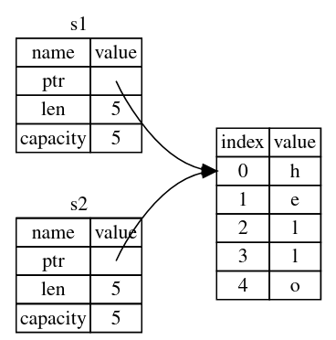
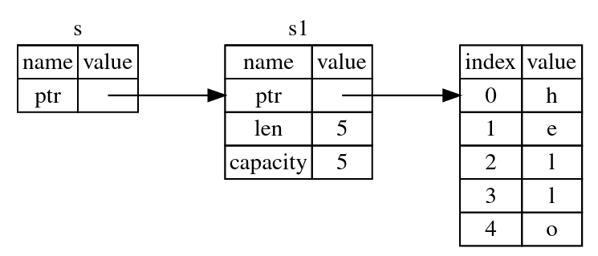

所有权
所有权（ownership）系统的主要目的在于管理堆上的数据。
- Rust 中每一个值都有一个所有者（owner）
- 值在任一时刻有且只有一个所有者
- 当所有者（变量）离开作用域（scope），这个值将被丢弃（调用
drop函数）
移动
#![allow(unused)] fn main() { let s1 = String::from("some"); let s2 = s1; println!("{},{}", s1, s2); // error: borrow of moved value: `s1` }
String 对象包含两个部分：
- 堆上的部分，长度可变的字符串
- 栈上的部分，指向字符串的指针、长度、容量
执行 s2 = s1 时，不会拷贝堆上的部分。并且在 s2 = s1 之后，s1 失效，不允许再使用。即产生了移动（move）操作。
克隆
如果确实需要拷贝堆上的数据，可以使用名为 clone 的通用函数。克隆（clone）操作后，原先的变量仍然可用。
#![allow(unused)] fn main() { let s1 = String::from("some"); let s2 = s1.clone(); println!("{},{}", s1, s2); }
拷贝
对于仅存储在栈上的数据，或者实现了 Copy trait 注解的类型，使用 = 会产生拷贝（copy）操作。拷贝后，原先的变量仍然可用。
#![allow(unused)] fn main() { let x = 5; let y = x; println!("{},{}", x, y); }
不允许自身或其任何部分实现了 Drop trait 的类型使用 Copy trait。实现 Copy 的类型有：
- 整型、浮点型、布尔型、字符类型
- 数组和元组，当且仅当其包含的类型都实现了
Copy
参数和返回值
参数和返回值的传递与赋值过程相同：
fn take_and_give_back(s: String) -> String { s } fn main() { let s1 = String::from("hello"); let s2 = take_and_give_back(s1); // s1 移动到函数内。函数返回值移动给 s2 } // s1, s2 离开作用域。s1 已被移动走，不做处理。s2 调用 drop。
引用和借用
引用（reference）类似于指针。引用允许你使用值但不获取其所有权。创建引用的行为称为借用（borrowing）。
fn get_len(s: &String) -> usize { s.len() } // 不会调用 drop fn main() { let s1 = String::from("hello"); let len = get_len(&s1); // s1 仍然可用 }
与引用相反的操作是解引用（dereferencing），使用
*运算符
可变引用
引用默认不可变。添加 mut 关键字创建可变引用。
#![allow(unused)] fn main() { fn change(s: &mut String) { s.push_str("some"); } }
#![allow(unused)] fn main() { let mut s = String::from("hello"); let r1 = &mut s; }
为了避免数据竞争，对于同一个对象，在同一时刻：
- 要么只有一个可变引用，没有其他引用
- 要么只有若干个不可变引用，没有可变引用
引用有效的范围是从声明的位置到最后一次使用，以此为标准来判断上面的“同一时刻”。
悬垂
在有指针的语言中，可能存在悬垂指针问题。指即针指向的对象已经被释放。Rust 通过声明周期机制保证引用不会处于悬垂状态。